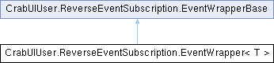

- Generated by
 1.16.0
1.16.0
|
CUI
GUI Framework for Barotrauma
|

Public Member Functions | |
| override void | Map (Delegate callback) |
| void | Map (Action< T > callback) |
| void | Raise (T arg) |
| void | Route (EventWrapperBase eventWrapper, Delegate callback) |
| Public Member Functions inherited from CrabUIUser.ReverseEventSubscription.EventWrapperBase | |
| void | Map (Delegate callback) |
Events | |
| Action< T > | Event |
Definition at line 19 of file ReverseEventSubscription.cs.
| void CrabUIUser.ReverseEventSubscription.EventWrapper< T >.Map | ( | Action< T > | callback | ) |
Definition at line 23 of file ReverseEventSubscription.cs.
| override void CrabUIUser.ReverseEventSubscription.EventWrapper< T >.Map | ( | Delegate | callback | ) |
Definition at line 22 of file ReverseEventSubscription.cs.
| void CrabUIUser.ReverseEventSubscription.EventWrapper< T >.Raise | ( | T | arg | ) |
Definition at line 25 of file ReverseEventSubscription.cs.
| void CrabUIUser.ReverseEventSubscription.EventWrapper< T >.Route | ( | EventWrapperBase | eventWrapper, |
| Delegate | callback ) |
Definition at line 27 of file ReverseEventSubscription.cs.
| Action<T> CrabUIUser.ReverseEventSubscription.EventWrapper< T >.Event |
Definition at line 21 of file ReverseEventSubscription.cs.